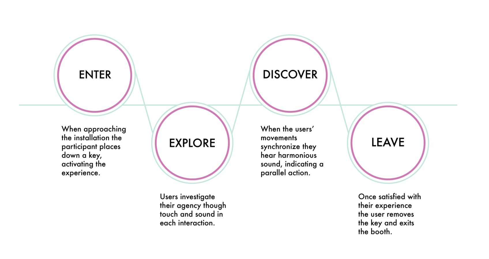
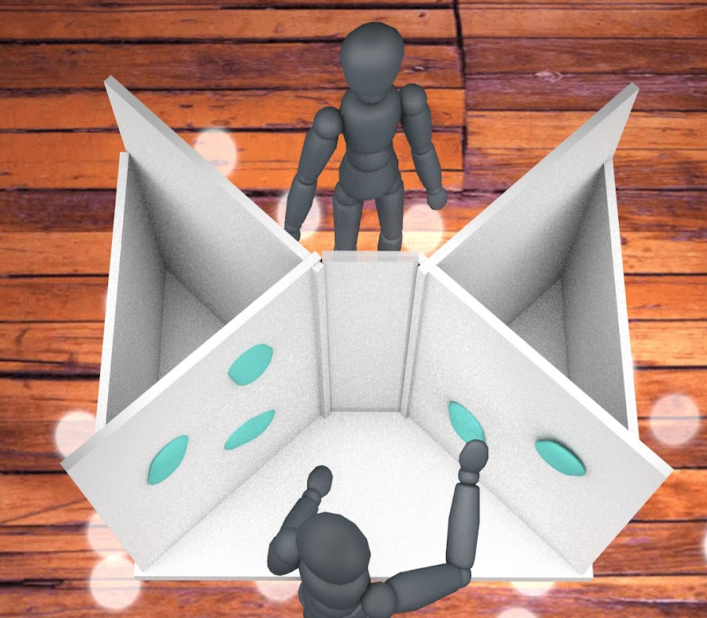
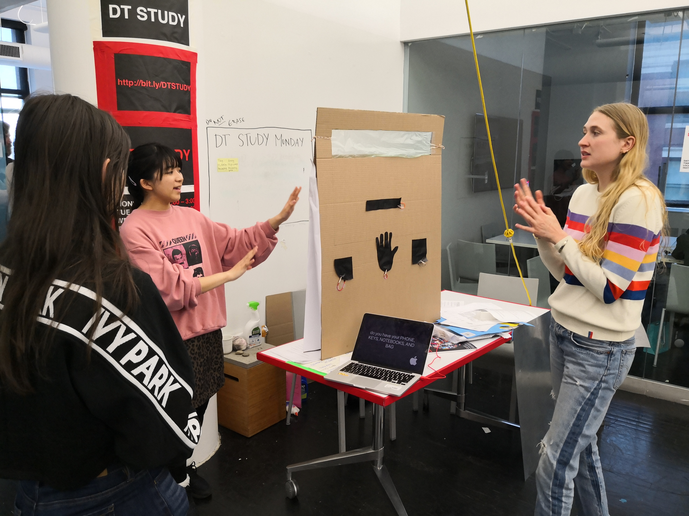
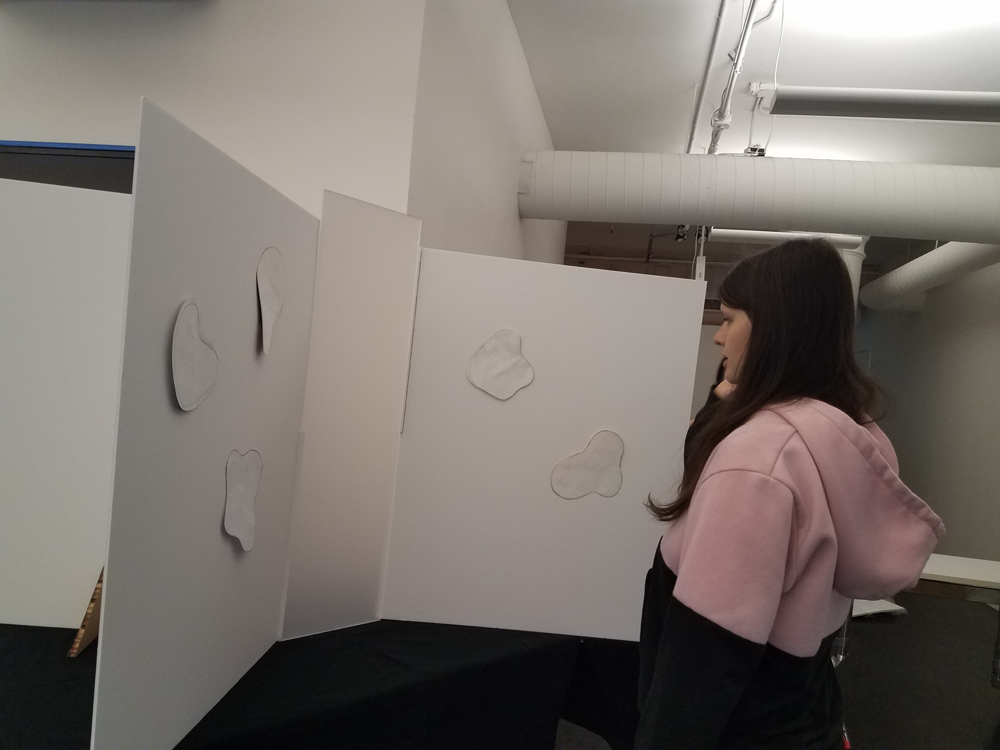

Parallax is an interactive sound experience that embodies the rare moment when two people have a parallel experience or thought.
The Interaction

The installation requires at least two participants in order to function in any manner. Without at least two participants, it will not exhibit any response to interactions. Only when two people perform parallel actions does the installation begin the experience and change states.
The experience is create do foster a deeper sense of connection that surbasses any visual or verbal communication. The connection that is created should satisfy both individuals and create almost a euphoric and surreal emotion.
The Booth

The booth is about 4 feet high and emcases a person. In the center is a translucent acrylic panel intersected by four panels which act as walls that separate the two participants. On each of these wall panels are two interactive touch pads coated with neoprene fabric which emit sound and vibration when pressed simultaneously by the users. The emitted sound is a digital, universally accepted tone that creates a feeling of satisfaction when heard.
User Testing


The interaction was created to be jhkhjkjkhfadsj hkafdsjkhadsfkjhasfd The interaction was created to
The interaction was created to be jhkhjkjkhfa dsjhkafdsjkhadsfkjhasfd The interaction was created to
The interaction was created to be jhkhjk jkhfadsjhkafdsjkhadsfkjhasfd The interaction was created to
The interaction was created to be jhkhjkjkhf adsjhkafdsjkhadsfkjhasfd The interaction was created to
The interaction was created to be jhkhjk jkhfadsjhkafdsjkhadsfkjhasfd The interaction was created to